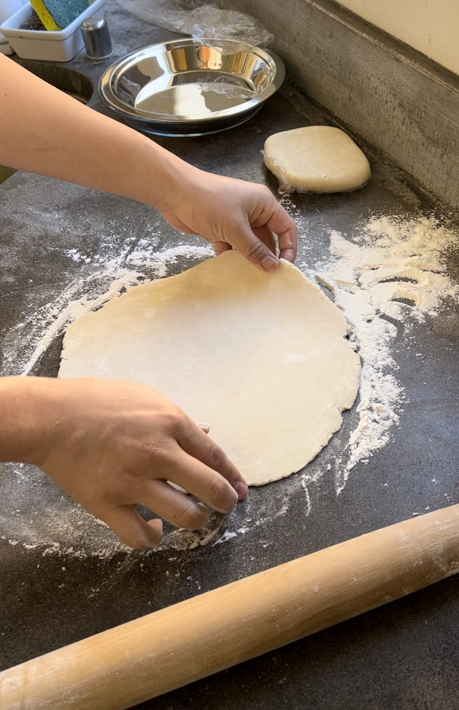

Pie Dough

Description
In this recipe, we will be making two simple pie doughs.
Original recipe by joshuacooksthendraws.
Ingredients
- 2 1/4 cups of all-purpose flour
- 2 tablespoons granulated sugar
- 1/2 teaspoon salt
- 1 cup (2 sticks) unsalted butter
- 1/2 cup ice water
Steps
- Add 2 1/4 cups flour, 2 tbsp sugar, and 1/2tsp salt to a food processor. Pulse to combine.
- Add 1 cup unsalted butter, cut into cubes. Pulse until only pea-sized pieces of butter remain. This shouldn’t take too long.
- Transfer mixture to a large bowl. Drizzle 1/2 cup of ice water over the mixture. I like to use a spatula at first to mix everything together since I find that it is the most sticky at this point. Then once things start to combine, I use my hands to mix thoroughly to knead a bit until no dry spots remain and the dough stays together.
- Cut the dough in half. I like to weigh them at this point to make sure that they are equal. Then wrap them tightly in plastic wrap. I use a small rolling pin to flatten them and spread them around a bit.
- Place them in a refrigerator for at least an hour. I usually make this dough the night before and leave them to chill overnight.